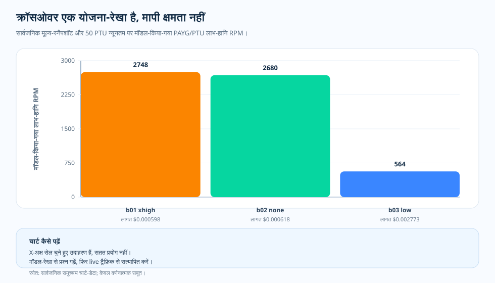

विषय-लेख · PTU/PAYG योजना-मॉडल
PTU/PAYG क्रॉसओवर: क्षमता का नतीजा नहीं, योजना की रेखा
कौन-सी मॉडल और effort सेल इस्तेमाल लायक़ है, यह हम पहले ही माप चुके हैं। अब ट्रैफ़िक-टीम अगली तिमाही का पूर्वानुमान थमाती है और बिल को मोड़ने वाला सवाल फेंकती है: इस अनुमानित request-दर पर PAYG (pay-as-you-go) पर रहें या प्रोविज़न्ड throughput (PTU) आरक्षित करें? मन करता है कि एक क्रॉसओवर-रेखा खींचकर उसे ही जवाब मान लें। यह लेख उस रेखा को वही मानता है जो वह सचमुच है — एक मॉडल-किया-गया, सिर्फ़-मूल्य का लाभ-हानि बिंदु, जो बताता है कि क्षमता-प्रयोग चलाना कब फ़ायदेमंद है — न कि यह कि चालू PTU सेवा भार में कैसे बरतेगी।

हमने इसे मॉडल क्यों किया
क्रॉसओवर-रेखा को दो तरह से बरता जा सकता है, और दोनों उलटी दिशा में खींचते हैं। पहला — इसे फ़ैसले की तरह पढ़ना: रेखा PTU की ओर इशारा कर रही है, इसलिए PTU आरक्षित कर लो। दूसरा — इसे योजना की चिंगारी की तरह पढ़ना: रेखा कह रही है कि इस वर्कलोड पर PTU सस्ता रहने की संभावना है, इसलिए यह वह जगह है जहाँ क्षमता-प्रयोग चलाना फ़ायदेमंद है। हमने क्रॉसओवर को इसी दूसरे पठन के लिए मॉडल किया।
ऐसा इसलिए, क्योंकि रेखा सिर्फ़ एक संकरे मूल्य-सवाल का जवाब देती है: एक मूल्य-स्नैपशॉट पर, एक मापे गए प्रति-request टोकन-आकार के लिए, तय PTU न्यूनतम कहाँ PAYG बिल से सस्ता पड़ता है। रेखा यह नहीं बताती कि सेवा वह ट्रैफ़िक ढो पाएगी, 429 थ्रॉटलिंग कहाँ शुरू होगी, भार में prompt cache कैसे बरतेगा, या p95 latency कैसी दिखेगी। उस मूल्य-जवाब को क्षमता-जवाब समझ बैठना ही वह भूल है जिसे यह लेख रोकना चाहता है।
इसलिए गणना जानबूझकर दो तरह के इनपुट जोड़ती है: एक ओर दिनांकित PAYG और PTU मूल्य-स्नैपशॉट, दूसरी ओर बेंचमार्क से मापी गई प्रति-request लागत और टोकन-आकार। यही जोड़ आउटपुट को — असली मापन में जड़ें रखते हुए भी मूल्य तक सीमित — एक योजना-मॉडल बनाती है, चालू क्षमता का नतीजा नहीं।
प्रश्न
मॉडल-किया-गया PTU/PAYG क्रॉसओवर क्या कह सकता है और क्या दावा नहीं करना चाहिए?
सबूत
दो दिनांकित मूल्य-स्नैपशॉट — pricing/azure-openai-payg-2026-05.yaml और pricing/azure-openai-ptu-2026-05.yaml — को benchmark-01/-02/-03 की मापी गई प्रति-request लागत और टोकन-आकार के throughput-गुणक से जोड़ती लाभ-हानि गणना। आउटपुट क्रॉसओवर चार्ट-डेटा में modeled_break_even_rpm शृंखला है, मापी गई throughput नहीं।
नतीजा
इस मूल्य-स्नैपशॉट पर मॉडल-किया-गया लाभ-हानि वहीं उतरता है जहाँ प्रति-request बिल और टोकन-आकार तय करते हैं। benchmark-01 extra-high क़रीब 149 rpm, benchmark-02 none क़रीब 2,680 rpm, benchmark-03 low क़रीब 564 rpm — सब $2.00 प्रति-PTU-घंटा वाले 50 PTU न्यूनतम के साथ स्केल करते हुए। ये मूल्य-स्नैपशॉट और प्रति-request टोकन-संरचना के साथ हिलने वाले गणित-मान हैं, मापे गए संतृप्ति-बिंदु नहीं।
निर्णय
क्रॉसओवर को इस वर्कलोड-आकार पर क्षमता-प्रयोग चलाने का समय बताने वाली योजना-रेखा की तरह पढ़ें, किसी ख़ास सेवा को PTU चाहिए ऐसा फ़ैसला नहीं। मूल्य, टोकन-संरचना या रीजन बदलने पर दोबारा निकालें।

मॉडल संकरे सवाल का जवाब देता है
क्रॉसओवर-गणना प्रति-request औसत लागत, टोकन-आकार के throughput-गुणक, सार्वजनिक मूल्य-स्नैपशॉट और 50 PTU न्यूनतम को जोड़ती है। आउटपुट एक मॉडल-किया-गया लाभ-हानि RPM है। मसलन benchmark-01 extra-high effort क़रीब 149 rpm, benchmark-02 none क़रीब 2,680 rpm, और benchmark-03 low क़रीब 564 rpm पर उतरते हैं।
ये आँकड़े इसलिए उपयोगी हैं क्योंकि ये दिखाते हैं कि वर्कलोड-आकार योजना-बातचीत को कैसे बदलता है। ये चालू भार के मापन नहीं हैं। 429 कहाँ शुरू होगी, संतृप्ति के पास cache कैसे बरतेगा, कोई ख़ास कॉन्फ़िगरेशन p95 latency में क्या करेगा — ये बातें वे नहीं कहते।
चार्ट कैसे पढ़ें
X-अक्ष चुनी बेंचमार्क-पंक्तियों की एक शृंखला है, Y-अक्ष मॉडल-किया-गया लाभ-हानि RPM। ऊँचा बार यानी मॉडल-किया-गया PTU न्यूनतम सस्ता दिखने से पहले PAYG ऊँची request-दर तक खिंच सकता है। नीचा बार यानी वह वर्कलोड मॉडल पर क्रॉसओवर तक जल्दी पहुँचता है।
ये बार सतत क्षमता-वक्र नहीं हैं। ये सार्वजनिक समुच्चय-डेटा और मूल्य-स्नैपशॉट से निकाले योजना-निशान हैं।
यह भेद क्यों मायने रखता है
इस भेद के बिना क्रॉसओवर-चार्ट वादे की तरह ग़लत पढ़ा जा सकता है। 149 rpm क्रॉसओवर वाली पंक्ति को "PTU चाहिए" और 2,680 rpm वाली को "PTU नहीं चाहिए" कहने का मन करता है। पर सबूत ज़्यादा सतर्क है। चार्ट बताता है कि मॉडल-की-गई मान्यताओं के तहत अर्थशास्त्र कैसा दिखता है। चालू सिस्टम को फिर भी latency, cache, retry और संतृप्ति का सबूत चाहिए।
वह सतर्कता कमज़ोरी नहीं। यही चार्ट को इस्तेमाल लायक़ बनाती है। चार्ट टीम को बताता है कि क्षमता-प्रयोग कब चलाना है। वह प्रयोग क्या पाएगा, यह नहीं बताता।
याद रखने योग्य बिंदु
PAYG और PTU अलग सवालों के जवाब देते हैं। PAYG पूछता है कि हर पूरा हुआ request कितने का पड़ता है। PTU पूछता है कि स्वीकार्य गुणवत्ता और latency के तहत तय क्षमता क्या ढो सकती है। क्रॉसओवर-रेखा इन दो दुनियाओं को जोड़ती है, पर उन्हें एक ही मापन में नहीं समेटती।
इसलिए इस परियोजना में हम उस रेखा को एक मॉडल-की-गई परिकल्पना के रूप में स्पष्ट रखते हैं। रेखा मापे गए चार्ट के ऊपर नहीं, उसके बग़ल में रहती है।
सबूत की तालिका
| सबूत-पंक्ति | मीट्रिक A | मीट्रिक B | क्या जुड़ता है |
|---|---|---|---|
| benchmark-01 extra-high | मॉडल 149 rpm | 50 PTU न्यूनतम | प्रति-request बिल ऊँचा, इसलिए जल्दी क्रॉसओवर। |
| benchmark-02 none | मॉडल 2,680 rpm | 50 PTU न्यूनतम | मापा request सस्ता, इसलिए देर से क्रॉसओवर। |
| benchmark-03 low | मॉडल 564 rpm | 50 PTU न्यूनतम | बीच का केस। एजेंट वर्कलोड का टोकन-आकार बड़ा। |
| सबूत-सीमा | मॉडल-किया अर्थशास्त्र | चालू क्षमता नहीं | आगे क्या आज़माना है, यह तय करने के लिए इस्तेमाल करें। |
स्रोत और सबूत-सीमा
ऊपर के सारे लाभ-हानि आँकड़े मापन नहीं, गणना हैं। मापी गई प्रति-request लागत और टोकन-आकार को दो दिनांकित मूल्य-स्नैपशॉट पर लगाकर निकाले गए हैं। नीचे की दो श्रेणियाँ बताती हैं कि प्रलेखित इनपुट कहाँ ख़त्म होता है और मॉडल-किया आउटपुट कहाँ शुरू। 50 PTU न्यूनतम पर 149 rpm क्रॉसओवर एक निकाली गई गणना है — न मापी गई throughput, न 429 की शुरुआत, न संतृप्ति-बिंदु।
- [1] Tier 1 — कार्यप्रणाली अनुबंध: यह रिपॉज़िटरी,
docs/05-methodology.md(v1.0)। प्रति सेल N = 20 लिखित नमूने, R = 3 दोहराव, केवल सार्वजनिक समुच्चय स्लाइस। प्रति-request लागत-इनपुट इसी स्थिर रुख़ को ढोते हैं; त्रुटि-बार मानक विचलन हैं, और N = 20 पर p-मान का दावा नहीं। - [2] Tier 1 — PAYG मूल्य स्नैपशॉट: यह रिपॉज़िटरी,
pricing/azure-openai-payg-2026-05.yaml— Azure OpenAI के आधिकारिक सार्वजनिक मूल्य-पृष्ठ का 2026-05-19 को लिया गया फ़्रोज़न स्नैपशॉट। यहाँ प्रति-1M-टोकन दाम (gpt-5.2 input $1.75/1M, cached input $0.175/1M, output और reasoning $14.00/1M, gpt-4o input $2.50/1M, cached $1.25/1M, output $10.00/1M) सूत्र में जाने वाले प्रति-request बिल को तय करते हैं। - [3] Tier 1 — PTU मूल्य स्नैपशॉट: यह रिपॉज़िटरी,
pricing/azure-openai-ptu-2026-05.yaml। स्रोत: Microsoft Learn — provisioned throughput onboarding (2026-05-19 को लिया गया, रीजन eastus2) · आर्काइव। सूत्र का PTU पक्ष — $2.00 प्रति-PTU-घंटा, 50 PTU न्यूनतम (फ़्लोर), throughput-गुणक में इस्तेमाल प्रति-PTU Input TPM (gpt-4o 2,500, gpt-5.2 3,400) — इसी स्नैपशॉट से है। लाभ-हानि में PAYG और PTU दोनों के दाम जाते हैं: एक ओर प्रति-request PAYG बिल, दूसरी ओर तय $100/घंटा PTU फ़्लोर (50 × $2.00)। - [4] Tier 2 — मापे गए प्रति-request इनपुट: यह रिपॉज़िटरी,
benchmarks/01-short-factual/analysis.json,benchmarks/02-multi-step-reasoning/analysis.json,benchmarks/03-tool-using-agent/analysis.json। ये प्रति-request औसत लागत और gpt-4o baseline के सापेक्ष throughput-लाभ गुणक बनने वाली प्रति-सेल टोकन-वितरण देते हैं। - [5] Tier 2 — मॉडल-किया क्रॉसओवर आउटपुट (मापन नहीं, गणना): यह रिपॉज़िटरी,
docs/blog/data/chart-data/ptu-payg-crossover/benchmark-01/crossover.json,benchmark-02/crossover.json,benchmark-03/crossover.json। चार्ट जोmodeled_break_even_rpmशृंखला खींचता है वह(min_ptu × ptu_hourly_rate ÷ (60 × mean_usd_per_request)) × throughput_gain_factorसे गणित है। benchmark-01 extra-high का 149 rpm, 50 PTU न्यूनतम और $2.00 प्रति-PTU-घंटा — सब गणित-किए या उद्धृत इनपुट हैं, मापी गई throughput नहीं, मॉडल-किए मान हैं। - [6] एविडेंस डैशबोर्ड: रेंडर हुए PTU/PAYG क्रॉसओवर चार्ट-समूह उन्हीं JSON कलाकृतियों का ऑडिट-योग्य रूप हैं।
यह स्लाइस क्या सिद्ध करती है और क्या नहीं: यह मॉडल-किया लाभ-हानि इस मूल्य-स्नैपशॉट पर, benchmark-01/-02/-03 के मापे टोकन-वितरण वाले वर्कलोड के लिए कहाँ बैठता है, यह दिखाती है। यह सिद्ध नहीं करती कि वही क्रॉसओवर किसी और मूल्य-स्नैपशॉट, वर्कलोड-आकार, cache-hit दर, रीज़निंग-संरचना या किसी और रीजन में टिकेगा। यह योजना-सहायता है — न SLA, न चालू क्षमता का कोई कथन।
इस सबूत से क्या कहा जा सकता है
क्रॉसओवर तभी मूल्यवान है जब वह विनम्र रहे। इस मूल्य-स्नैपशॉट पर, इस टोकन-वितरण के लिए, यह सबूत को योजना-सवाल में बदलता है, और चालू क्षमता को चालू मापन पर छोड़ देता है।
व्यावहारिक नियम
- लाभ-हानि RPM को दिनांकित PAYG और PTU स्नैपशॉट से निकाली सिर्फ़-मूल्य गणना मानें, और किसी भी स्नैपशॉट के हिलने पर दोबारा निकालें।
- सामान्य वर्कलोड के बजाय उस स्लाइस के मापे टोकन-आकार से मेल बैठाएँ जिसकी आप योजना बना रहे हैं।
- नीचे क्रॉसओवर को सेवा को PTU चाहिए, इसका प्रमाण न मानें — क्षमता-प्रयोग चलाने की चिंगारी मानें।
- PTU पक्का करने से पहले चार्ट में न दिखने वाले ग़ैर-मूल्य कारक — latency लक्ष्य, एडमिशन समवर्तीता, बर्स्ट सहनशीलता — सोचें।
व्यावहारिक नियम: क्रॉसओवर सिर्फ़ इस स्नैपशॉट और टोकन-आकार पर सिर्फ़-मूल्य लाभ-हानि दिखाता है। PTU या PAYG का फ़ैसला उन ग़ैर-मूल्य कारकों — latency, एडमिशन, बर्स्ट — के साथ जोड़ी बनाकर लें जिन्हें यह मॉडल नहीं कर सकता।
आगे: मापन से प्रोडक्शन तक — सबूत की आदतें संचालन की आदतें कब बनती हैं, और उन दोनों के बीच क्या साथ जाता है?